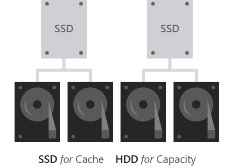

こんにちは。Windows Commercial Storage & High Availability チーム 山口です。
Windows Failover Clustering Service (WSFC) の Storage Space Direct ( 以降 S2D ) をご利用いただいております環境では、
ディスク故障時にデータを退避するための Reserve 領域の確保をお勧めしております。
本ブログでは、Reserve 領域の確認方法と確認時における注意点をおまとめさせていただいております。
Reserve 領域とは
記憶域プールに未割り当て容量を残しておくと、ドライブの障害後に、ボリュームに “インプレース” 修復のための領域が用意され、データの安全性とパフォーマンスが向上します。 十分な容量がある場合は、障害が発生したドライブを交換する前でも、自動的にインプレースの修復が実行され、ボリュームを完全な回復性まで復元できます。
図. Reserve 領域
// S2D の Reserve capacity
[https://learn.microsoft.com/ja-jp/azure-stack/hci/concepts/plan-volumes#reserve-capacity][1]
Reserve 領域に必要となる容量に関して
・ サーバーごとに、S2D を構成する 最大容量のドライブ (Physical Disk) の一つ分に相当する未割り当ての領域を確保することをお勧めいたします。
・ 最大 4 台のドライブ分を確保します。
例えば、 2 台のサーバーがあり、1 TB の容量ドライブを使用している場合は、プールの 2 x 1 = 2 TB を予約として確保します。 3 台のサーバーと 1 TB の容量ドライブがある場合は、3 × 1 = 3 TB を予約として確保します。 4 台以上のサーバーと 1 TB の容量ドライブがある場合は、4 x 1 = 4 TB を予約として確保します。
・ Tier 構成の場合には、Tier 毎に “インプレース” 修復が実施されますため、Tier 毎に 1 台の容量ドライブ (最大 4 台のドライブ) に相当する未割り当て領域を確保することをお勧めします。
例えば、下図のように SSD と HDD が capacity として存在する場合には、SSD と HDD で、それぞれ容量ドライブ (最大 4 台のドライブ) 分を確保します。
図. S2D Tier 構成 イメージ図
Reserve 領域の確認方法 (容量固定 (Fixed Volume) の場合)
1. capacity が HDD または SSD 一種類の場合
<確認方法>
- 管理者権限にて Power Shell を起動します。
- Get-StoragePool の結果として、 Size と AllocatedSize を取得します。
- Reserve 領域 = Size - AllocatedSize として計算します。
PS C:> get-storagepool
FriendlyName OperationalStatus HealthStatus IsPrimordial IsReadOnly Size AllocatedSize
Primordial OK Healthy True False 9.89 TB 9.76 TB
S2D on WS2019-Clus OK Healthy False False 9.75 TB 1.47 TB
Primordial OK Healthy True False 9.89 TB 9.76 TB
Size (9.75) - AllocatedSize (1.47 TB) = (未割り当て領域) 8.28 TB
2. capacity が HDD と SSD 混在の場合
Capacity として HDD と SSD が混在する場合には Tier 毎に未割り当て領域の確認が必要となります。
<確認方法>
- Get-StorageTier の結果として、 Size と FootprintOnPool を確認します。
- Get-StorageTierSupportedSize で対象 Tier の TierSizeMax を確認します。
- 以下の計算を行い、Pool 上の該当 Tier で使用可能な値を計算します。
TierSizeMax * ( FootprintOnPool / Size )
Reserve 領域の確認方法 (容量可変 (Thin-Provisioning Volume) の場合)
確認方法については進展あり次第アップデートさせて頂きます。
Windows Admin Center (WAC) で確認できる S2D の情報に関して
WAC の [Drivers] 項目には、 S2D の Capacity 情報が表示されますが、SDDC_Drive クラスの値を基に作成された表示のため、
Get-Storagepool コマンドで表示される MSFT_StoragePool クラスの値とは異なりますためご注意ください。
WAC 上の表示と ノード上でのコマンド結果には数 GB 単位で差異が生じることがございます。
現在の Pool や Tier 単位での未割り当て領域の正確な値の確認を行う場合には、”Reserve 領域の確認方法 (容量固定 (Fixed) の場合)” を
ご参考に、Power Shell コマンドでのご確認を実施いただけますようお願い申し上げます。
// Power Shell コマンド結果
// WAC 上の表示
・Used -> MediaType 毎の SDDC_Drive.size.Used の合計となります。
・Available -> “sddc_Drive.size - sddc_Drive.sizeUsed” の合計となります。
・Reserve -> 各 Tier の プールを構成するディスクで最もサイズの大きい HDD /SSD の値 × ノード数 (最大 4 ノード) となります。
・Total Size-> SDDC_Drive.size の合計となります。
SDDC Class の SDDC_Drive から取得していますが、これは MSFT_Physicaldisk と同等であり、
SDDC_Drive.size は、MSFT_Physicaldisk の Size、SDDC_Drive.size.Used は、MSFT_Physicaldisk の AllocatedSize と同じです。
例 )
PS C:> get-physicaldisk
Number FriendlyName SerialNumber MediaType CanPool OperationalStatus HealthStatus Usage Size
2001 Msft Virtual Disk HDD False OK Healthy Auto-Select 500 GB
3004 Msft Virtual Disk HDD False OK Healthy Auto-Select 500 GB
3001 Msft Virtual Disk HDD False OK Healthy Auto-Select 500 GB
2002 Msft Virtual Disk HDD False OK Healthy Auto-Select 500 GB
2003 Msft Virtual Disk HDD False OK Healthy Auto-Select 500 GB
3002 Msft Virtual Disk HDD False OK Healthy Auto-Select 500 GB
1003 Msft Virtual Disk HDD False OK Healthy Auto-Select 500 GB
2004 Msft Virtual Disk HDD False OK Healthy Auto-Select 500 GB
1002 Msft Virtual Disk HDD False OK Healthy Auto-Select 500 GB
1004 Msft Virtual Disk HDD False OK Healthy Auto-Select 500 GB
3003 Msft Virtual Disk HDD False OK Healthy Auto-Select 500 GB
1001 Msft Virtual Disk HDD False OK Healthy Auto-Select 500 GB
一つのディスクの MSFT_Physicaldisk.Size = 536870912000 byte
Total Size = 536870912000 × 12 = 6,442,450,944,000 byte ≒ 5.86 TB
本投稿が少しでも皆様のお役に立てば幸いです。
※ 本情報の内容 (添付文書、リンク先などを含む) は、作成日時点でのものであり、予告なく変更される場合があります。